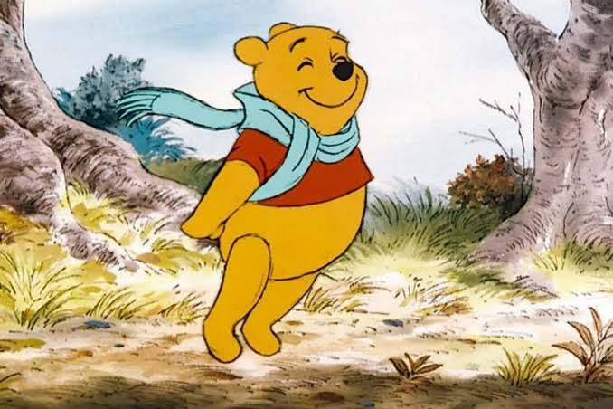

Ursinho Pooh
Curiosidades e fatos sobre esse desenho antigo e que marcou muitas gerações: Ursinho Pooh
Por: Yasmin Pieri
Curiosidades
O Ursinho Pooh foi criado pelo autor inglês Alan Alexander Milne, que publicou o primeiro livro em 1926. Sua inspiração foi um ursinho de pelúcia real que seu filho, Christopher Robin Milne, ganhou, o nome original "Winnie the pooh" vem de Winniepeg, uma ursa que vivia no zoológico de Londres, e o nome "Pooh" veio do nome de um cisne de histórias que eram contadas pela família Milne.
A famosa camisa vermelha do Pooh não existia nos livros originais; ela foi criada pela Disney quando adaptou a história para os cinemas.
As pelúcias originais de Milne que inspiraram o desenho fazem parte do catálogo da Biblioteca Pública de Nova York desde 1987. Elas estão expostas para o público na sala Infantil e acompanham uma grande quantidade de obras literárias destinadas às crianças. É possível ver Ursinho, Tigrão, Leitão e Ló. Guru foi perdido antes da exposição, e os demais personagens foram inventados pelo escritor.
Quando Pooh foi desenvolvido, o avanço tecnológico ainda caminhava lentamente. Dessa forma, não restou outra opção para Milne além de desenhar Pooh a mão todas as histórias lançadas. Mesmo depois de ser vendido para a Disney, a tradição se manteve por diversos anos, para manter a imagem do ursinho fiel à versão original.
